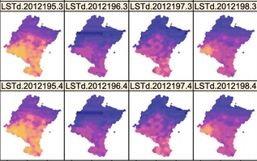
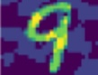

|
Shuo Han I'm a master student at Northwestern University in Evanston, and my major is Statistics and Data Science. Earlier, I got a bachelor's degree at Boston University, where my major is Computer Science and Statistics. |

|
ResearchI'm interested in Large Language Models(LLMs), AI for Security, and Data Mining. Most of my research is about some security problems in LLMs. |
|

|
Hydro-GRNNI: Hydrological Graph Recurrent Neural Network for Imputation
Shuo Han Northwestern University, 2024 project page / PDF A novel approach which enhances the resolution of hydrological data with spatiotemporal inputs, leveraging Graph Recurrent Neural Network (GRNN). |
|
|
Soft-Label Integration for Robust Toxicity Classification
Zelei Cheng, Xian Wu, Jiahao Yu, Xin-Qiang Cai, Shuo Han, Xinyu Xing NeurIPS, 2024 arXiv A bi-level optimization framework that integrates crowdsourced annotations with soft-labeling and optimizes them using GroupDRO to enhance robustness against out-of-distribution risks. |
|

|
MC-GAN: an Adversarial Sample Defense Algorithm
Chenli Wang, Juyang Wu, Xing Yang, Junfei Wang, Jian Shu, Jiazhong Lu, Yuanyuan Huang, Shuo Han ICCWAMTIP, 2024 arXiv Integrate GANs with model compression techniques to help defend against adversarial samples along with reduced training costs. |
|
|
A Botnet Data Collection Method For Industrial Internet
Jian Shu, Bo Xian, Chenli Wang, Peter Zhizhin, Yuanyuan Huang, Shuo Han ICCWAMTIP, 2024 arXiv A data collection method for industrial Internet-oriented botnet by classifying traffic packets according to network traffic features and industrial control identification codes, containing the status of industrial control devices. |
Academic Services |
| Volunteer, WSDM 2024 | |
|
Graduate Teaching Assistant, STAT 332-0/IBIS 432, Spring 2023
Graduate Teaching Assistant, STAT 303-2, Winter 2023 |
|
Theme powered by Jon Barron |